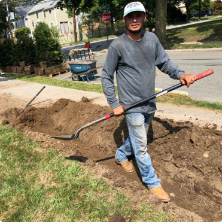

What to expect when you buy an
Thinking of purchasing your first InstantHedge?
How exciting!
While installing an InstantHedge is a fast, simple process, there
are a few things you should know before you dive in to make
everything go as smoothly as possible.
This is an exhaustive guide to everything you might want or
need to know about how the InstantHedge process works.
See the InstantHedge
experience firsthand
with Floret!
How InstantHedge is Sold
InstantHedge’s prefinished hedge units are sold in 3 forms:
MiniHedge
MiniHedge units are 18-24 inches tall. Each unit is 32 inches long and contains 5 plants. Each unit weighs under 40 lbs as they are container grown. They come in plastic pots. This size is great for creating low hedges, borders, and knot gardensMinihedge XL
MiniHedgeXL units are 35" long and range from 2-3' tall. Each unit contains 5 plants and weighs around 60 lbs. They come in plastic pots. This is a great mid-range size that is bigger for things like Boxwood and smaller for things like Yew and Arborvitae.How InstantHedge is Shipped
InstantHedge units are packed 3
per standard 40x48 pallet
per standard 40x48 pallet
InstantHedges are always shipped on standard 40”x48” pallets. They are sometimes shipped with common carriers or on semis with final mile delivery (see note above).
InstantHedge
3-6’ tall, 40” long About 250 lbs each
These are large and heavy. We recommend 2-3 strong people or handling with equipmentAll shipping is included in the price listed on the website, regardless of method chosen. We reserve the right to decide which shipping method is best for each order.
Each pallet is surrounded in
cardboard before shipping
cardboard before shipping
24 MiniHedge fit on a pallet rack
MiniHedges can either be shipped in custom cardboard boxes via FedEx Ground (transit time around 1 week) or on a pallet rack (transit time 3-10 business days). Sometimes the racks are shipped with common carriers like FedEx Freight, and sometimes they are hauled on refrigerated semis and then delivered by a final mile carrier who can provide lift-gate service.
MiniHedge
18-24” tall, 32” long Under 50 lbs each
A manageable size for 1 or 2 people to carry and plantWe have a few different methods for shipping hedges, and the one chosen for your order will depend on several factors, like order size, delivery region, time of year, hedge type, etc. Each order is assigned a shipping method after careful consideration by our shipping team.
MiniHedge in individual box
shipping via FedEx Ground
shipping via FedEx Ground
Each pallet is completely surrounded
with cardboard
with cardboard
MiniHedge XL
2-3' Tall, 35" Long 60 lbs each
Manageable for 1 or 2 people to carry and plantThe MiniHedge XL can ship from 6-11 units per pallet. They will be shipped with the same methods as the MiniHedges but they are too large to ship in individual boxes via FedEx Ground.
You will be notified when your order ships. Sometimes a tracking number will be available, but
sometimes there won’t be
one. If it is shipping on pallets, you will also be contacted by the shipping company to schedule a
delivery
appointment. Please be ready to answer calls from unknown numbers when your delivery time is close,
as these shipping
companies don’t
always leave voicemails and they will need to speak to you directly to schedule the appointment.
Failure to answer their
calls may result in delivery delays.
Since the pallets are around 1000 lbs each, the carrier will unload the pallets from the truck using
a lift gate and a
pallet jack. They will leave the pallets on the nearest paved surface, like a sidewalk or driveway,
but the pallet jacks
cannot go over gravel, pavers, brick, or grass. Please arrange for other help to move the hedges
into their final
location on your property.
IMPORTANT - Shipping timing is not an exact science. We can try to hit a certain window of days for
delivery, but
factors out of our control can always cause delays. Please wait until you
have a delivery appointment scheduled with the shipping company to set a day for labor help.
Optimum shipping times are September-November and January-May.
How InstantHedge is Installed
MiniHedges are lightweight and easy to install yourself. Simply dig a trench to the required length, 7 inches deep, and 12 inches wide. Lift the hedge units from their pots and place them end to end in the trench. Backfill, mulch over the root zone, and water well.
InstantHedges weigh around 250 lbs each, so you will need help planting them. Two or three strong people can move these around by hand, but a small tractor with forks will make things easier. If moving by hand, a couple of hay hooks provide convenient handles. Dig the trench 12 inches deep by 18 inches wide to your required length, and lower the hedge units, cardboard and all, into the trench. Make sure they are placed end to end nice and snug to avoid gaps. Then backfill, mulch over the root zone, and water well.

Digging the trench
Lining up the hedges end to end
Lowering the hedge units
into the trench
into the trench
How InstantHedge is Maintained
Once planted, the hardest part is done. The main things you
need to remember for maintenance are
irrigation,
fertilization,
and pruning.
Irrigating your hedge is extremely easy if you set up a drip hose on a timer. Make sure to
water well for the first
couple of years as the hedge gets established. Water deeply 1-2 times per
week, especially in dry periods. You want the soil to be moist but not soggy.
Click
here for more information on
watering
hedges.
Apply a slow release fertilizer once per
year in early spring to feed the hedge through
the
growing season.
Click here
for
more information on fertilizing hedges.
Pruning frequency will depend on your desired size and hedge variety. Faster growing hedges
like Green Giant will need
to be pruned 2-3 times per year, while slower growers like
Emerald Green need it only once. You can use electric trimmers or handheld pruners, but make
sure the blades are very
sharp.
Click here for more
information on pruning hedges.
InstantHedge in Action
See some examples of our hedges in real projects: